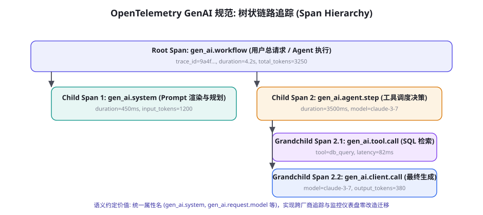
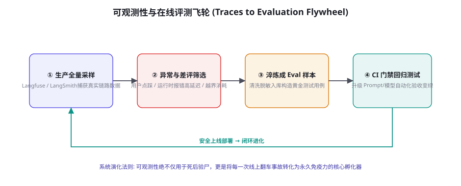

可观测性：Tracing、Eval 与监控
你无法管理你看不见的东西。传统的后端系统只包含确定的函数调用与网络 I/O，日志排查路径清晰；而智能体系统充斥着非确定性的大模型采样、复杂的递归反思分支、动态工具装配与长时程上下文状态机。一旦生产发生故障，如果缺乏工业级的全链路追踪与可观测性体系，工程师面对的将是彻底的黑盒迷宫。本章将解密 OpenTelemetry GenAI 语义约定规范、开源与商业化追踪平台（Langfuse、LangSmith）的工程实战、从生产 Traces 到金标准评测集的闭环飞轮，以及告警系统的四维核心指标设计。
OpenTelemetry GenAI：工业级语义约定标准

早期大模型开发充斥着各个框架自定义的私有 Logging 格式，造成跨系统迁移时监控仪表盘完全作废。云原生计算基金会（CNCF）主导的 OpenTelemetry GenAI Semantic Conventions 确立了现代智能体可观测性的事实标准：
① 标准属性字典（Standard Attribute Keys）：规范了模型调用必须上报的元数据字段，杜绝各团队各自发明的混乱命名：
gen_ai.system：标识底层大模型供应商体系（如anthropic,openai,deepseek,vllm）。gen_ai.request.model与gen_ai.response.model：记录期望请求与真实命中的具体模型版本（用于捕捉第 62 章提及的模型静默漂移）。gen_ai.usage.input_tokens与gen_ai.usage.output_tokens：严格的精确计费 Token 数，且必须拆分cached_tokens（用于监控第 78 章 Prompt Caching 的真实命中率）。gen_ai.request.temperature与top_p：记录生成超参数，保证故障事故能够被确定性复现。
② 分层 Span 树状生命周期：一个复杂的智能体任务被自上而下严格拆解为嵌套的上下文链路（Span）：
顶层是涵盖整个用户意图的 workflow 根节点；向下分叉出负责状态拆解的 agent.plan 节点；当智能体发起外部系统交互时，派生出 tool.call 节点（记录工具名称、入参 JSON、物理耗时与执行状态）；最终，向底层模型发起的每一次物理网络调用被沉淀为叶子级的 client.call 节点。通过贯穿始终的 trace_id 与 parent_span_id，复杂的几十步交互被编织成清晰可视的因果瀑布图（Flame Graph）。
实战架构：Langfuse 与 LangSmith 的选型与集成
在企业选型落地时，研发团队通常在完全自建、纯开源私有化部署与商用托管 SaaS 之间权衡：
| 核心维度 | 自研纯 ELK / Prometheus 方案 | Langfuse (开源自托管 / 云原生) | LangSmith (LangChain 深度集成) |
|---|---|---|---|
| 部署成本 | 高（需自研复杂的树状 UI 与 Token 解析） | 极低（标准 Docker Compose 一键拉起，PostgreSQL + ClickHouse） | 零（官方托管 SaaS，国内访问存在合规与网络门槛） |
| 代码侵入度 | 极高（每个调用手动打点埋点） | 极低（支持 OpenTelemetry 自动采集、Python 装饰器、TypeScript SDK） | 与 LangChain / LangGraph 框架深度绑定，零侵入无缝集成 |
| 数据隐私性 | 100% 内部受控，零合规顾虑 | 100% 本地自托管，数据绝不离境（第 61 章隐私合规首选） | 敏感数据上传第三方云端，涉及跨境合规审查 |
| 在线 Eval 能力 | 无（需自行编写评测管线） | 内建评分打标、模型评分器（LLM-as-a-Judge）与用户点赞/踩绑定 | 提供极度强大的标注队列（Annotation Queues）与离线测试比对 |
初学者最常犯的性能低级错误：在智能体的每一个工具调用与模型返回后，使用同步 HTTP 请求将几十 KB 的 Prompt 和返回内容上传至监控服务器。这种幼稚的设计会引发严重的级联延迟恶化与雪崩风险：当监控平台发生偶发性网络抖动或负载过高时，整个正在执行关键任务的业务 Agent 会被死死阻塞在打点请求上数秒钟，甚至直接因为监控超时抛出异常导致核心业务崩溃！生产级可观测性 SDK（如 Langfuse SDK 或 OpenTelemetry BatchSpanProcessor）在底层必须严格使用异步环形缓冲区（Async Ring Buffer）与后台工作线程：应用主线程仅以微秒级耗时将打点事件丢入内存队列，由后台守护线程按批次（Batch）或按时间窗口（如每 2 秒）集中异步刷入外部存储，并配备严密的内存上限丢弃策略（Drop on Overflow），确保监控逻辑绝不反向干扰核心业务运行。
在线评测（Online Eval）的实时守门与置信路由
可观测性绝不能仅仅停留在「事后看报表」，现代前沿智能体系统正在将评测能力直接下沉至请求的运行时主干中，构建在线实时评估守门机制（Online Guardrail & Evaluator in the Loop）：
第一模式：影子评估器并行校验（Shadow Evaluator）。在面向用户的交互线程旁路，调度轻量级专用小模型（如 3B 级经过量化与蒸馏的专门裁判模型，第 48 章与第 57 章），与主干生成同步运行。它不阻塞用户主文本的流式返回，但在毫秒级内对已生成的文本片段执行三项严密扫描：① 事实一致性与材料支持度（第 63 章 Grounding 检验）；② 潜在偏见、攻击性与安全违规标记（第 55/62 章）；③ 对核心业务规则的遵循度。一旦影子评估器抛出「高危风险」警报，系统在输出尚未彻底完成前，能够平滑切断剩余生成流并向前端注入兜底修正声明。
第二模式：基于 Eval 分数的自适应重试与动态回退（Eval-Driven Fallback）。在批处理或代码修复任务中，Agent 的每一次输出不仅由编译命令检验，还会直接输入轻量的在线评估管道打分。若评估流水线给出的综合可信度低于预设阈值（例如单步代码生成的上下文相关性得分低于 0.75），工作流引擎自动触发局部单步回滚重试（Rollback & Re-prompt），在错误尚未污染全局上下文之前将其原地消灭。通过将「评测」从离线 CI 门禁（第 56 章）搬移至在线执行流，智能体系统的单次通过可靠性得以实现本质跃升。
闭环飞轮：从生产 Traces 淬炼金标准评测集

很多团队将可观测性平台仅仅当成被动的「报错日志查看器」，这极大浪费了其蕴藏的核心数据价值。成熟团队必须构建「Traces-to-Eval 自动化飞轮」：
第一步：多渠道失败线索捕获（Failure Triage）。系统在生产环境中自动过滤四类高价值「劣质 Trace」：① 最终用户点击「Dislike / 点踩」并附带反馈的会话；② 运行时被安全沙箱拦截（第 60 章）或触发重试熔断的长任务；③ Token 消耗异常膨胀偏离 P95 均值 3 倍的极端异常链路；④ 在线 LLM-as-a-Judge（第 57 章）巡检查出的低置信度回复。
第二步：自动化脱敏与环境隔离提炼（Sanitization & Synthesis）。由专门的清洗作业拉取上述劣质 Trace，调用第 61 章的 PII 脱敏管线剥离所有真实客户手机号、订单号与企业专有标识。将引发模型做出错误判断的用户输入提炼为一道标准考题，并提取当时的工具环境定义与标准期望终态。
第三步：回填入库与 CI 质量门禁扩充（Regression Expansion）。这道从真实线上事故中提炼出的全新用例，直接被自动推送到团队的内部 SWE-bench 或影子评测集库（第 56 章）中。在下一次模型微调、提示词修改或框架重构提交 PR 时，CI 流水线强制跑过这道曾经摔倒过的真题。每一次线上事故都转化为一道自动化测试用例，整个系统的智能体架构因此具备了生物免疫系统般的自愈抗体。
海量 Traces 的生命周期管理与数据治理
智能体生产系统每天可能产生数百万次模型调用，伴随着完整 Prompt 文本、工具返回数据与高清截图快照，其日增数据量极易突破数百 GB 乃至数 TB。缺乏生命周期治理的存储系统会在三个月内面临性能雪崩与天价存储账单。工业级实践必须实施冷热分层存储（Tiered Trace Retention）：
① 热数据区（Hot Storage，保留 7 天）：部署在高性能内存数据库或 SSD 分布式缓存（如 Elasticsearch、带有向量加速的 PostgreSQL）中。保留全量、未压缩的原始 Trace 详情，支持研发与客服团队在秒级内精确定位排查最近发生的线上用户工单与即时突发故障。
② 温数据区（Warm Storage，保留 30~90 天）：执行激进的「骨肉分离与局部折叠」：丢弃占体积 80% 的冗余系统提示词前缀与原始网页 HTML，仅保留用户原始输入、关键工具调用入参结果及最终输出摘要。数据以列式压缩格式（如 Parquet）写入对象存储（如 S3 或内部 HDFS），用于支撑月度成本分摊核算、模型性能纵向漂移分析以及评测集采样回填。
③ 冷数据区（Cold Storage，保留 1 年以上）：彻底剥离所有具体的文本 Payload，仅保留带有匿名化脱敏 ID 的宏观聚合统计指标（如 trace_id、耗时分布、Token 数量、调用状态码与错误分类标签）。这部分元数据压缩存放于深冷归档存储中，仅用于满足第 65 章所述的法规遵从性与年度数据安全审计要求。
监控告警：智能体系统的四维核心黄金指标
面对智能体系统，传统的 CPU/内存利用率监控几乎丧失了诊断意义。架构师必须在控制台上建立以 Agent 行为特征为核心的「四维黄金健康指标体系」：
| 指标维度 | 核心量化指标 (Metrics) | 异常告警阈值参考 | 背后的系统性病因 |
|---|---|---|---|
| 1. 任务交付率 | 端到端任务成功率 (Task Success Rate)、单步工具调用错误率 | 成功率日均环比下跌 > 5%、工具报错率 > 8% | 第三方 API 协议突发变更、模型版本被服务商静默升级 |
| 2. 时延与流畅度 | 首字响应时间 (TTFT P95)、端到端挂钟完成耗时 (E2E Latency P90) | TTFT > 3.5s、长任务耗时连续超预期 2 倍 | 推理引擎排队阻塞、Prompt Caching 前缀缓存击穿失效 |
| 3. 财务与资源 | 单任务平均 Token 消耗、单日总推理资费、每解决单元成本 | 单任务 Token 突破 P99 上限、日预算消耗超出基线 50% | 智能体陷入死循环自我纠偏（Looping）、提示注入恶意刷量 |
| 4. 人机交互健康度 | 人类中途接管干预率 (Takeover Rate)、用户主动取消率、负向反馈率 | 人工介入率 > 15%、点踩率 > 4% | 提示词过拒率飙升伤及无辜（第 64 章）、模型输出幻觉失真 |
在分布式多智能体（第 28 章）或微服务拆分环境中，最大的痛点是上游 Agent 发起了一个任务，下游 5 个子 Agent 和几十次工具调用在不同的容器进程中执行，导致日志碎片散落各处无法串联。最佳实践是建立严格的「W3C TraceContext 贯穿透传标准」：在任何跨进程 HTTP 请求、消息队列（Kafka/RabbitMQ）或 A2A 协议中，强制在 Header 中附带 traceparent: 00-4bf92f3577b34da6a3ce929d0e0e4736-00f067aa0ba902b7-01。所有子服务与工具沙箱从当前上下文中提取并继承相同的 trace_id，并在派生子任务时自动建立 parent_id 关联，确保无论调用跨越多少个服务器节点，管理控制台均可一键展开无缝的全局因果执行调用树。
复杂 Agent 故障排查实战手册（Debugging Playbook）
当可观测性平台触发高危告警时，值班工程师需要一套结构化的排障定式（Playbook），以在最短时间内切断故障扩散：
第一步：五秒止血与影响面快速定级（Triage & Mitigate）。迅速在控制台过滤受影响的 tenant_id 与 feature_tag。如果发现是由于外部某个特定依赖工具（如第三方搜索 API 或外部支付网关）全面瘫痪导致的级联崩溃，立即通过动态配置中心（如 Nacos、Consul）向网关下发功能降级指令，关闭受损工具的装配入口，切换为备选纯文本兜底回复，防止全站瘫痪。
第二步：抓取三条代表性 Trace 进行因果下钻（Root Cause Isolation）。随机挑选一条成功 Trace 与两条失败 Trace 进行「双流对齐（Diffing）」：① 对比输入与提示词（Input Diff）：失败请求的用户输入是否包含罕见格式？是否命中了未处理的边缘场景？② 对比中间决策树（Plan Diff）：智能体是在哪一步做出了反常的工具选择？查看该步骤的系统提示词与 Few-shot 示例，是否存在语义冲突？③ 对比环境响应（Environment Diff）：工具返回的数据结构是否发生了未声明的破坏性变更（Breaking Change）？
第三步：现场复现与单元回归固化（Reproduction & Hotfix）。将引发故障的输入参数与环境上下文打包，提取为独立的离线复现脚本（第 56 章 Harness 格式）。在修复提示词、更新工具调用逻辑或打上防御补丁后，确保该离线脚本能够 100% 稳定变绿，并随同代码直接合入主干代码库。
分布式上下文透传与跨协议链路关联（Context Propagation）
在复杂的现代微服务或多智能体系统中，单次用户交互往往触发跨语言、跨协议的复杂调用。一个看似简单的查询可能在 Python 编写的规划 Agent、Go 编写的高性能检索网关、Node.js 编写的浏览器视控容器之间不断跳转。此时，链路可观测性的第一杀手就是「上下文断链」（Trace Context Detachment）。为了让整个链路能够在同一个瀑布图中展开，系统必须严格执行分布式上下文注入（Injection）与提取（Extraction）规范：
① 统一 HTTP / gRPC 协议标头：跨服务通信时，调用方必须将当前的 trace_id、span_id 以及采样决策标志打包为标准标头（遵循 W3C Trace Context 规范的 traceparent 字段）。接收服务在反序列化请求时，首要动作是调用提取器解析该标头，并在本地当前线程或协程中将其绑定为活动父级 Span，绝不允许生成彼此孤立的随机新链路。
② 异步任务队列与消息中间件透传：在长时程异步架构（如 Celery、Kafka、RabbitMQ）中，任务入队与消费在时间和空间上被彻底切断。生产者在将任务 Payload 序列化投递至队列时，必须将当前的链路上下文打包写入消息的属性元数据（Message Headers / Properties）；消费者在从队列拉取消息唤醒时，读取消息属性重新挂载上下文，从而将离线异步处理与在线同步发起源头完美粘合在一起。
③ 业务级 Baggage 随路透传：除了机器底层的追踪 ID，系统还需借助 OpenTelemetry 的 Baggage 机制，随链路无缝透传不参与路由判断但极度关键的业务元数据（例如 user.tier=vip, experiment.id=prompt_v2_exp）。下游所有的子 Agent 与工具组件均无需显式改动接口入参，即可自动从上下文中读取这些业务属性，实现统一的成本核算、灰度分流与精细化审计标注。
高可用 OpenTelemetry 链路打点实战
下面给出一段符合 OpenTelemetry 规范与工业级异步批处理哲学的 Python 原生智能体打点核心实现代码：
import time, uuid
from contextlib import contextmanager
class AgentTracer:
def __init__(self, service_name: str, exporter_client):
self.service_name = service_name
self.exporter = exporter_client
self.active_spans = []
@contextmanager
def start_span(self, name: str, span_type: str, attributes: dict = None):
"""支持嵌套的上下文追踪管理器 (遵循 OTel GenAI 语义)"""
span_id = str(uuid.uuid4())[:8]
parent_id = self.active_spans[-1]["span_id"] if self.active_spans else None
trace_id = self.active_spans[0]["trace_id"] if self.active_spans else str(uuid.uuid4())
span_record = {
"name": name,
"span_id": span_id,
"parent_id": parent_id,
"trace_id": trace_id,
"type": span_type, # workflow | agent.plan | tool.call | llm.call
"start_time": time.time(),
"attributes": attributes or {}
}
self.active_spans.append(span_record)
try:
yield span_record
except Exception as e:
# 捕获崩溃异常与堆栈
span_record["attributes"]["error.type"] = type(e).__name__
span_record["attributes"]["error.message"] = str(e)
raise
finally:
span_record["end_time"] = time.time()
span_record["duration_ms"] = round((span_record["end_time"] - span_record["start_time"]) * 1000, 2)
self.active_spans.pop()
# 异步非阻塞推送到后台缓冲队列
self.exporter.enqueue_span(span_record)
# 实战调用示例
tracer = AgentTracer("financial-analyst-agent", mock_exporter)
with tracer.start_span("process_user_query", "workflow", {"user.id": "usr_9981"}) as root_span:
# 1. 记录规划步骤
with tracer.start_span("decompose_plan", "agent.plan") as plan_span:
# 模拟模型生成计划
plan_span["attributes"]["gen_ai.request.model"] = "claude-3-7-sonnet"
plan_span["attributes"]["gen_ai.usage.input_tokens"] = 1450
plan_span["attributes"]["gen_ai.usage.output_tokens"] = 180
# 2. 记录工具执行
with tracer.start_span("fetch_stock_quote", "tool.call") as tool_span:
tool_span["attributes"]["gen_ai.tool.name"] = "get_ticker_price"
tool_span["attributes"]["tool.arguments"] = '{"symbol": "NVDA"}'
tool_span["attributes"]["tool.latency_ms"] = 124上述架构展现了现代可观测性代码的优雅与轻量：它完全解除了与特定监控商业 SDK 的强行死锁绑定，利用纯 Python 上下文管理器标准抽象了 Span 的嵌套入栈与出栈生命周期，在异常抛出时自动打上 OTel 标准的错误特征，并将所有高维数据异步安全移交给后台队列，保障了核心业务线程的极致纯净。
补充一个极具指导价值的实务准则：针对非确定性生成的「语义级健康度探针」（Semantic Health Probes）。在传统微服务中，只要接口返回 HTTP 200，监控系统就会判定服务处于健康状态。但在 Agent 生产体系中，模型返回了合法的 JSON 报文且没有任何异常报错，其内容却可能是完全虚假的幻觉编造、或者是毫无意义的车轱辘话复读（此时机器层面一切正常，业务层面彻底崩塌）。为了解决这种「表面 200 正常、实则业务报废」的监控盲区，架构师必须在关键主干链路上布置轻量级的语义探针：周期性提取回复的困惑度（Perplexity）、词汇多样性熵值以及与原始指令的关键实体交集比率。一旦发现模型输出的语义熵异常跌入死寂区间（典型的话语重复退化），立即触发行为层异常告警，将质量隐患扼杀在用户感知之前。
三个高频疑问
Q：将生产中所有的完整 Prompt 与大模型回复全量记录到追踪平台中，是否会带来巨大的数据存储成本并引发合规泄密风险？必须采用「动态采样率与就地掩码脱敏」（Dynamic Sampling & Local Masking）双重机制。对于普通的正常流量，可配置 1%~5% 的低采样率（仅对全量请求采集轻量的耗时与 Token 统计数值，丢弃大文本 Body）；但一旦触发异常（如工具报错、点踩反馈或命中安全规则），采样引擎自动对该链路开启「100% 全量回放抓取」。同时，所有发送至可观测性平台的文本，必须在应用层内存中强制经过第 61 章的 PII 脱敏过滤器（掩码身份证号、密钥与用户私密信息），严格做到「看得见逻辑因果，看不见原始敏感密文」。
Q：生产排障中，如果发现某一步工具调用的输出正常，但下游模型突然开始逻辑混乱或疯狂拒绝，如何快速定位根因？利用「上下文差异对照分析」（Context Diffing）。在 Langfuse 或类似平台的 Trace 瀑布图中，找到发生行为异变的那一步 Span，使用对照工具并排对比它的输入上下文：重点排查① 提示词前缀是否无意识混入了第 59 章所述的外部间接注入代码？② 系统提示词模板是否在上一轮发布中发生了隐蔽的格式漂移？③ 历史多轮工具返回累加是否触发了第 26 章提到的「上下文长程注意力稀释」？通过将健康 Trace 与病态 Trace 逐行对齐，通常能在 3 分钟内精确定位罪魁祸首。
Q：自建可观测性平台时，选择 PostgreSQL 还是 ClickHouse 存储海量链路数据？对于中小规模团队（日调用量在 10 万次以内），标准的 PostgreSQL（配置 JSONB 索引）已经足够轻量可靠且运维负担极低；但一旦企业的智能体服务放量，单日产生数千万条 Span 与高频高维分析查询时，必须果断引入列式分析数据库 ClickHouse 作为底层冷热数据分层引擎。ClickHouse 极高的磁盘数据压缩比（通常可达 5~10 倍）与毫秒级的跨维度聚合扫描能力，能将海量链路数据的存储与查询开销降低一个数量级。
本章在全书网络中的连接：上游接续第 56 章（自建评测系统）与第 78 章（Agent 经济学财务核算），为整个前沿篇提供透明透视底座；横向连接第 60 章（受控沙箱审计流）与第 65 章（合规与责任追踪链）；下游直接为第 80 章（大规模系统并发工程）提供健康感知与流量调度信号。复习锚点：OpenTelemetry GenAI 标准属性树状结构（图 79-1）、三类平台选型对比（表 79-1）、异步批处理打点原理、Traces-to-Eval 飞轮（图 79-2）、四维核心黄金监控指标（表 79-2）。
本章收尾，回顾可观测性工程的演进本质：它是连接「不可控的概率魔法」与「高度确定性的现代工业软件标准」之间的唯一物理桥梁。没有可观测性，智能体就像一只在黑夜的大海上盲目航行、随时可能触礁沉没的幽灵船；而具备了工业级 OTel 链路追踪、在线实时评测、数据闭环飞轮与分层生命周期治理的系统，则如同配备了全景雷达与黑匣子的现代化航天器。下一章我们将迎来前沿篇的压轴终卷——第 80 章 Agent 系统规模化：队列、并发与可靠性，探索当并发任务从几十个暴增至数万个时，如何利用分布式任务编排、幂等状态机与优雅降级支撑起千万级生产吞吐！
本章小结
- 可观测性是智能体从实验玩具迈向工业级生产交付的透明中枢，彻底消除黑盒运行带来的调试与治理迷茫。
- OpenTelemetry GenAI 确立了语义约定事实标准，统一了
gen_ai.system,usage.tokens,tool.call等核心属性的树状因果链路。 - 生产打点必须严格遵循异步批处理与非阻塞原则，杜绝监控系统网络抖动反向拖垮核心业务。
- Traces-to-Eval 飞轮将线上真实的负反馈与翻车事故，自动脱敏转化为 CI 流水线中的黄金测试门禁，构筑系统的自愈抗体。
- 牢牢盯紧任务交付率、时延流畅度、财务资源与人机交互健康度四大黄金指标，实施因果级精准告警。
自测题
- 对照 OpenTelemetry GenAI 规范，列举在记录一次工具调用（Tool Call）时，必须上报的 4 个核心 Span 属性是什么？
- 为什么在长时程多智能体协作中，跨进程网络调用必须在 Header 中透传
traceparent？这解决了排障中的什么实际难题？ - 设计一个针对生产环境中「劣质 Trace」的自动化捕获规则：系统应依据哪些信号判断当前链路值得被抓取并提炼为回归测试用例？
- 针对第 78 章中提到的提示词前缀缓存（Prompt Caching），在可观测性仪表盘中应该如何通过监控指标直观呈现缓存的真实命中率？
参考文献与延伸阅读
- CNCF / OpenTelemetry (2024). Semantic Conventions for Generative AI Systems. opentelemetry.io（可观测性行业事实标准）
- Langfuse Team (2023-2025). Open Source LLM Engineering Platform Documentation. langfuse.com
- LangChain (2024). LangSmith: Debug, Test, Evaluate, and Monitor LLM Applications. docs.smith.langchain.com
- Beyer, B. et al. (2016). Site Reliability Engineering: How Google Runs Production Systems (SRE 黄金指标). O'Reilly Media.
- Arize AI (2024). Phoenix: AI Observability & Evaluation Platform. github.com/Arize-ai/phoenix
- W3C (2021). W3C Trace Context Specification. w3.org（跨服务链路上下文透传标准）